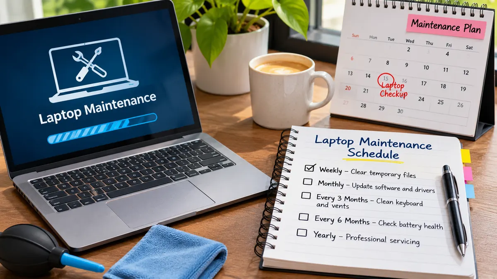

Laptops
How Often Should You Service Your Laptop? A Simple Maintenance Schedule
A practical laptop maintenance schedule covering weekly checks, monthly cleaning, annual servicing, warning signs, and preparation for repair.
Set a Maintenance Rhythm Instead of Waiting for Trouble
Maintenance Schedule
While it is unlikely your laptop will need a full service by a technician every few weeks, it is beneficial to have a regular schedule. How often you service your laptop will depend on how much you use it, where it is used, its age and how much use it gets. If your student laptop is used every day, it could be exposed to more dust and knocks. If your business laptop is used for extended periods of time, it may need more attention.
The ideal way to service your laptop would be by having a basic maintenance schedule and having your laptop checked by technicians. By doing small daily/weekly maintenance tasks, you will reduce unnecessary wear and tear. Technicians can help spot issues as they start to develop such as noisy fans, poor battery life, loose hinges, overheating and storage issues. Don’t wait until your laptop completely breaks down to look into issues.
Daily and Weekly Tasks
Avoid eating, drinking and placing loose items near your laptop. Place your laptop on a hard flat surface to ensure there isn’t any blockage in the air vents. Also avoid using your laptop on soft surfaces like bed, cushions or thick fabric. Place your laptop in a padded sleeve or compartment. Ensure that your laptop is turned off or put on sleep mode according to the manufacturer instructions.
Once a week, check for any obvious changes. Are you getting a new fan noise? Is your laptop getting hotter in certain areas? Are your charging ports becoming loose? Is your battery getting drained quicker than usual? Are your keys not working? Ensure that your important files are backed up and you have installed security and OS updates.
Monthly Tasks
Clean your screen and exterior every couple of months. Always follow the manufacturers guidelines for the correct cleaning materials. Turn your laptop off and unplug any accessories. Use a soft lint free cloth. Never spray your screen or keyboard. Gently wipe any dust from the air vents. Avoid using household cleaning products, harsh materials and too much water.
Ensure that your laptop has enough storage, programmes aren’t opening on startup and that you don’t have any unnecessary programmes. Don’t remove any system files or unknown files. Run your built in security tool or trusted security programme. Ensure that your files are being backed up. Ensure that your Operating System and programmes are supported and updated. If your laptop is running slower than normal, look into why.
Professional Check Up
If you are using your laptop regularly, we recommend having a check up by a professional every couple of years. This is particularly important if your laptop is quite old, used in a dusty environment or is essential for your work. Technicians can check your laptop for overheating, fans, air vents, loose hinges, ports, keyboard, battery, storage and any liquid or impact damage. You should follow the manufacturers instructions for how often your laptop should be serviced.
Some laptops are sealed and can be difficult to open due to the sensitive clips and connections. It is easy to cause damage to the cover, battery, cables or motherboard by not having the correct tools or knowledge. If your laptop has collected a lot of dust in the cooling system, it may be worth getting it professionally cleaned. Ask the company what checks will be carried out and if any parts or repairs need extra permission.
When to Look Into Issues
If your laptop is constantly shutting down, running hot, making grinding/clicking noises or has a swollen battery, do not wait until your annual check. A swollen battery can be dangerous. Stop using and charging your laptop. Don’t press or poke the battery. Get your laptop serviced by a qualified professional. If your laptop is smelling burnt, has had a liquid spill, damaged charging port or exposed cables.
If you are getting constant blue screens, random restarts, drive issues, file corruption or not charging, this could be due to hardware or software issues. Backup any important data as soon as possible. If your laptop has any business or confidential data, make sure to mention to the technician that your laptop is encrypted and needs backing up.
Basic Maintenance Schedule
If you are using your laptop lightly at home, keep up with the weekly checks and monthly clean. If you are using your laptop regularly as a student, follow the same process. If your student laptop is being taken around a lot or used for long study sessions, we recommend an annual check. If your laptop is used all day for business, an annual preventative check can help cut down on downtime. However, if your laptop is being used a lot or in a dusty environment, it could need more regular checks.
These are just general recommendations. If your laptop is brand new and in a clean environment then it may not need much aside from regular maintenance. However, if it is older and being used a lot, it may need more regular checks. Always check the warranty and recommendations from the manufacturer.
Before Servicing
Always backup any important documents, pictures and project files. Take note of any issues you are having, when they occur and any error messages. If your issue is intermittent, write a brief description of what causes it. Remove any detachable accessories. Find out how the centre will deal with passwords, personal data and diagnostics.
Before allowing any paid repairs, check if your laptop is under warranty. Ask for an explanation of what the issue is, what will be done, what parts will be needed, how much it will cost and how long it will take. Having a clear history of your service will help you keep track of any reoccurring issues.

Conclusion
A reasonable service schedule for your laptop would include weekly checks, monthly clean and software checks and professional checks if your laptop is being used a lot, is old or having issues. Light users may only need an occasional check. Business laptops that are used a lot can benefit from regular preventative checks. Always follow the manufacturers instructions, backup your data and address any overheating, swollen batteries, strange noises or constant crashing. While regular maintenance won’t stop all issues, it can increase the lifespan of your laptop and reduce any unnecessary issues.
Need a hand with your printer or laptop?
Printerworld sells printers, laptops and genuine supplies, and repairs and services both. Bring in your model number and we will help you get it right.